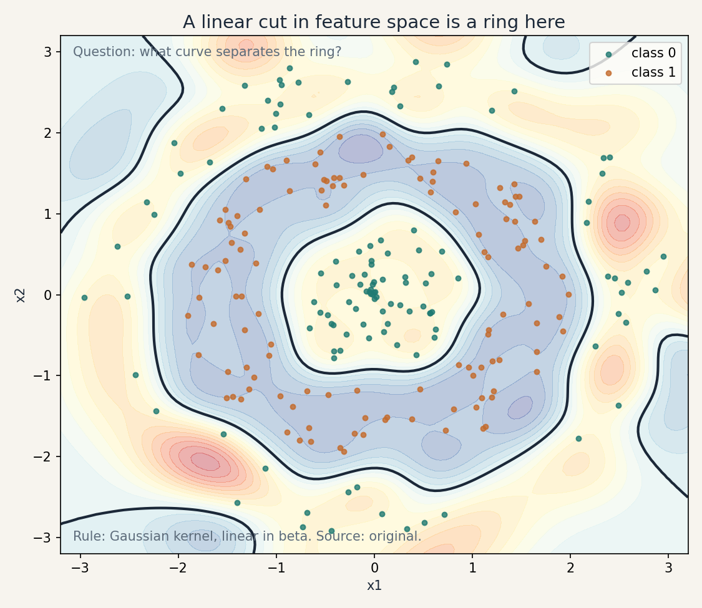
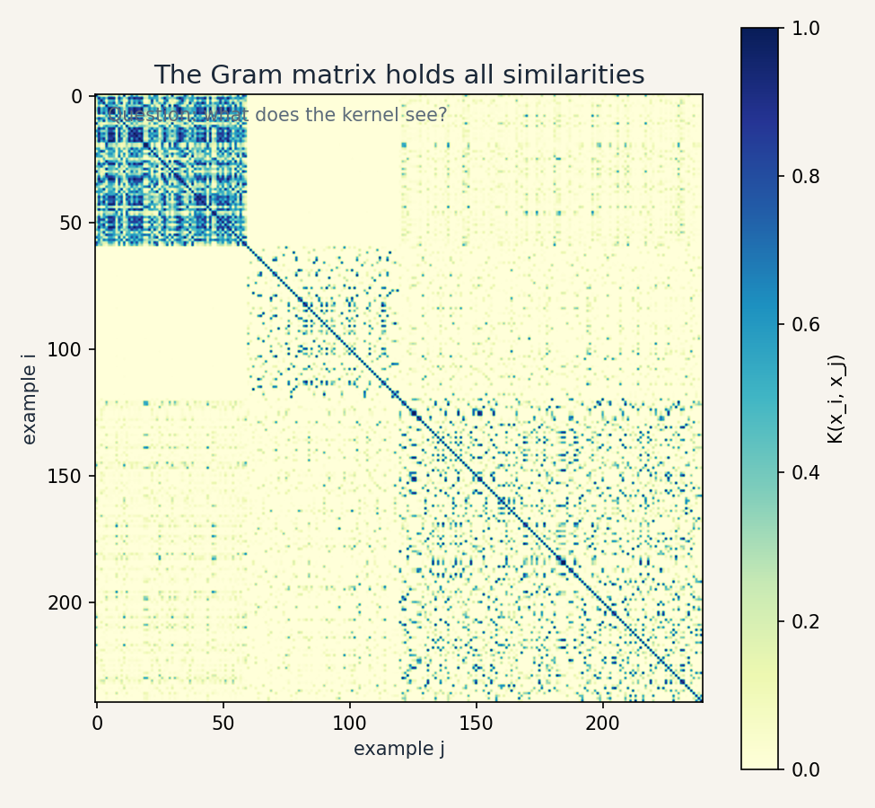

Lesson 05 · Kernels
Lesson 05, Feature maps and kernel methods
Unit: cs229-U05. Leaf concepts: cs229-U05-C01 to C12. Date: 2026-10-06. Baseline: October 6, 2026.
Source mapping
Chapter 5 of the notes (SRC-01, PDF pages 50-59) was read in full on 2026-10-06. Section 5.1 gives the cubic feature map phi. Section 5.2 gives LMS with features. Section 5.3 gives the kernel trick: the dual beta representation, the polynomial kernel identity, and kernelized LMS. Section 5.4 gives symmetry/PSD necessity, Mercer’s theorem, the Gaussian kernel, and the string-kernel example. Regularization, scaling, and limitations are bridge content. Leaf rows carry SOURCE ATTRIBUTION PENDING until the RUN 6 pass.
Scope and objectives
Scope: making linear methods nonlinear by mapping features, then erasing the map and keeping only inner products.
Objectives: the learner can (1) write an explicit feature map, (2) derive the dual representation, (3) run kernelized LMS, (4) test a kernel matrix for symmetry and PSD, (5) compose valid kernels, (6) state the costs and limits.
Dependencies
Prerequisites: P03, P04, P09 (shared bridges, linked).
Not-yet-understood list:
- A feature map (remediated in SL-01).
- The dual representation (remediated in SL-02).
- PSD matrices (remediated in SL-03).
- Kernel costs (remediated in SL-04).
SL-01: Explicit feature maps
Covers C01 (explicit features).
Source anchor
SRC-01 section 5.1, page 50. The cubic map phi(x) = [1, x, x^2, x^3]^T turns a cubic in x into a linear function in phi(x).
Motivating question
House price curves with living area. A line underfits. How do we fit a cubic while keeping the linear machinery?
Mental model
Map the input attribute x to a feature vector phi(x) that lists the nonlinear terms, then fit a linear model in the features. The cubic is linear in [1, x, x^2, x^3]. The model did not change. The input did.
Computed example
x = 2. phi(x) = [1, 2, 4, 8]. theta = [1, 0.5, -0.1, 0.02]. Prediction: 1 + 1 - 0.4 + 0.16 = 1.76. Same theta^T phi arithmetic as linear regression, richer curves.
Correctness checks
- phi(x) keeps a fixed length for every x.
- The prediction is linear in theta, nonlinear in x.
Nearest alternative
Fit the cubic directly with nonlinear least squares. Same fit, less reuse of the linear theory.
Failure case
Degree-20 map on 25 points: the features memorize (U02 SL-06). The map adds capacity. It does not add wisdom.
SL-02: The dual representation and kernelized LMS
Covers C02 (inner-product kernel), C03 (dual representation), C04 (kernelized LMS).
Source anchor
SRC-01 section 5.3, pages 51-54. The notes show theta = sum_i beta_i phi(x^{(i)}), define K(x, z) = phi(x)^T phi(z), and rewrite LMS as beta := beta + alpha (y - K beta).
Motivating question
The cubic map in d = 1000 dimensions has ~1e9 entries. Can we fit the cubic without ever writing it down?
Mental model
Start theta at 0. Every LMS update adds a multiple of some phi(x^{(i)}). So theta always equals sum_i beta_i phi(x^{(i)}): a combination of training feature vectors. Predictions need only inner products phi(x)^T phi(z). Define K(x, z) as that inner product and never form phi.
Derivation
Batch LMS with features: theta := theta + alpha sum_i (y^{(i)} - theta^T phi(x^{(i)})) phi(x^{(i)}). Write theta = sum_j beta_j phi(x^{(j)}). The update on the coefficients: beta_i := beta_i + alpha (y^{(i)} - sum_j beta_j K(x^{(i)}, x^{(j)})). In vector form with K the Gram matrix: beta := beta + alpha (y - K beta). Prediction at x: theta^T phi(x) = sum_i beta_i K(x^{(i)}, x) (notes pages 53-54).
The polynomial kernel identity
For phi listing all monomials of degree <= 3:
K(x, z) = 1 +
Computed example
x = [1, 2], z = [3, 1].
Minimal implementation
import numpy as np
def poly_kernel(X, Z, degree=3):
return (1.0 + X @ Z.T) ** degree
X = np.array([[1.0, 2.0], [3.0, 1.0]])
K = poly_kernel(X, X)
print(K)
# beta LMS
y = np.array([1.0, -1.0])
beta = np.zeros(2)
for _ in range(500):
beta = beta + 0.05 * (y - K @ beta)
print(beta)
Expected: K = [[156, 216],[216, 1001]] roughly (check: (1+5)^3=216, (1+10)^3=1331? recompute: x1.x1 = 1+4=5, (1+5)^3 = 216. x2.x2 = 9+1=10, (1+10)^3 = 1331. x1.x2 = 3+2=5, (1+5)^3=216.) So K = [[216, 216],[216, 1331]]. beta converges toward K^{-1} y.
Correctness checks
- K(x, x) >= 0 always.
- beta LMS must converge to the same predictions as primal LMS on small explicit features. Test on d = 2, degree 2.
Nearest alternative
Explicit features when d is small: simpler code, same math. Random Fourier features: explicit but approximate.
Failure case
Forgetting that beta has length n (examples), not p (features). The dual trades feature dimension for sample size: it wins when p >> n and loses when n >> p.
Russian-doll ladder for the kernel trick
- Shell 0: Question: can we fit degree-3 in d = 1000 without 1e9 numbers? Observable: wall-clock time.
- Shell 1: Toy: x = [1,2], z = [3,1], K = 156.
- Shell 2: Objects: phi, K, beta, Gram matrix.
- Shell 3: Rule: replace inner products with K.
- Shell 4: Derive: the beta update from the theta update.
- Shell 5: Invariant: dual predictions equal primal predictions. Verify numerically.
- Shell 6: Change one factor: degree 2 vs 5. Predict the fit bends more. Measure train error.
- Shell 7: Counterexample: K(x,z) = x - z is not a valid kernel. The Gram matrix has negative eigenvalues and the “trick” produces garbage.
- Shell 8: Compare: kernelized vs explicit LMS at d = 5, degree 3, under equal time.
- Shell 9: Extension: time per update vs d for both. falsifiable claim: kernelized is flat in the implicit dimension.
- Shell 10: Production: a string classifier uses the string kernel (notes page 59). The decision is the kernel, never the 26^k feature vector.
SL-03: Gram matrices and valid kernels
Covers C05 (Gram matrix), C06 (symmetry/PSD), C07 (valid kernel composition).
Source anchor
SRC-01 section 5.4, pages 57-59. Symmetric PSD is necessary (the z^T K z sum-of-squares proof) and, by Mercer, sufficient. Gaussian kernel example, digit and string examples.
Mental model
The Gram matrix K_ij = K(x^{(i)}, x^{(j)}) holds all pairwise similarities. If K comes from some phi, K is symmetric (inner products commute) and PSD (z^T K z = sum_k (sum_i z_i phi_k(x^{(i)}))^2 >= 0). Mercer says the converse holds: symmetric PSD on every finite point set means some phi exists, possibly infinite-dimensional.
Computed example
Points x = [0, 1, 2], Gaussian kernel sigma = 1: K_ij = exp(-(x_i - x_j)^2/2). K = [[1, 0.6065, 0.1353], [0.6065, 1, 0.6065], [0.1353, 0.6065, 1]]. Eigenvalues: 1.74, 0.8647, 0.3929 (all positive). Valid.
Invalid: K(x, z) = x - z on points {0, 1}: matrix [[0, -1],[1, 0]]. Not symmetric. Rejected.
Composition rules
Sums, products, and positive scalings of valid kernels are valid. exp(K) is valid. This builds new kernels from old ones without re-proving Mercer each time.
Correctness checks
- Symmetry: max |K - K^T| near zero.
- PSD: smallest eigenvalue >= -1e-8 (numerical tolerance).
- K(x, x) > 0 for distinct-feature kernels.
Nearest alternative
Distance-based methods (k-NN) use dissimilarity without needing PSD. Kernel methods need the PSD certificate.
Failure case
A hand-made “similarity” that is not PSD: the dual objective is no longer convex, SMO-style solvers can diverge, and predictions lose meaning. Test PSD before trusting a custom kernel.
SL-04: Geometry, costs, regularization, scaling, limits
Covers C08 (nonlinear geometry), C09 (computational cost), C10 (regularization), C11 (feature scaling), C12 (kernel limitations).
Motivating question
The kernel maps to infinite dimensions. What does the decision boundary look like back in the input space, and what do we pay?
Nonlinear geometry
A linear boundary in feature space is a curved boundary in input space. The Gaussian kernel draws smooth blobs around training points. The polynomial kernel draws algebraic curves. The kernel chooses the curve family.
Computational cost
Gram matrix: O(n^2) kernel evaluations, O(n^2) memory. Kernelized LMS per sweep: O(n^2). Prediction per query: O(n). The dual wins when the implicit dimension p >> n and loses when n is huge: 1e6 examples need 1e12 Gram entries. Remedies: subset methods, random features, or primal SGD on explicit features.
Regularization
Kernel methods still overfit: the Gaussian kernel with tiny sigma memorizes (each point its own blob). Control: ridge on beta (add lambda I to K), or pick sigma by validation. Regularization is not optional in infinite-dimensional spaces.
Feature scaling
K(x, z) = exp(-||x - z||^2/(2 sigma^2)) is ruled by raw distances. A feature in dollars vs a feature in cents gets 1e4 times the weight. Standardize first, then pick sigma on the standardized scale.
Limitations
- No feature weights to inspect: the model is a sum over examples, not over features. Interpretability suffers.
- Prediction cost grows with n: every query touches all support points.
- Kernel choice is a prior: the wrong kernel is a wrong model, and validation is the only honest selector.
- PSD is a hard constraint: not every similarity is a kernel.
Computed cost example
n = 10,000, d = 20, degree-3 polynomial. Gram: 1e8 entries, 800 MB in float64. One beta sweep: 1e8 multiply-adds. Explicit features: p ~ 1771, primal sweep O(n p) = 1.8e7. Here the primal is cheaper: n >> p, so the dual loses. Choose by arithmetic, not habit.
Correctness checks
- Memory estimate before forming K: n^2 * 8 bytes.
- With tiny sigma, train accuracy 1.0 and validation poor: diagnose memorization, raise sigma or lambda.
Nearest alternative
Deep networks (U07): learn the feature map instead of fixing the kernel. More data-hungry, less principled at small n.
Failure case
Gaussian kernel, sigma = 1e-6, no regularization: K is numerically the identity, beta = y, train error 0, test error huge. The kernel did exactly what was asked.
Assessment
Breadth recall
E01: Write the cubic feature map for scalar x. E02: State the dual representation of theta. E03: Write the kernelized LMS update. E04: State the two necessary kernel properties. E05: State Mercer’s condition in one sentence. E06: Name two kernel composition rules.
Deep oral ladders
L01 (kernel trick): (1) Define K. (2) Toy: the 156 computation. (3) Derive the beta update. (4) Implement and match primal predictions. (5) Compare kernelized vs explicit cost at d = 1000, degree 3. (6) Debug: predictions differ from primal. Name two causes. (7) Critique: when is the dual the wrong choice? (8) Design: pick primal vs dual for n = 1e6, d = 10.
L02 (validity): (1) Define the Gram matrix. (2) Toy: the 3x3 Gaussian Gram. (3) Prove z^T K z >= 0 from the feature map. (4) Implement the symmetry/PSD test. (5) Compare Gaussian vs polynomial geometry on a ring dataset. (6) Debug: negative eigenvalue. Name the cause. (7) Critique: PSD is sufficient but is it necessary for good predictions? (8) Design: validate a custom string similarity as a kernel.
Analytical exercises
E07: K(x,z) = (x^T z)^2, x = [1,2], z = [3,1]. Compute K and exhibit phi. Answer in keys. E08: Prove the sum of two valid kernels is valid. Answer in keys.
Failure diagnosis
E09: Kernelized LMS diverges while primal converges on the same data. Name two causes.
Counterfactual comparison
E10: Team A uses the Gaussian kernel with sigma picked by validation. Team B uses degree-2 polynomial. The true boundary is a circle. Who wins and why?
Research question
E11: On a ring dataset, measure test error vs sigma for the Gaussian kernel. State the falsifiable claim about the curve shape.
Implementation task
E12: Implement the PSD test and the composition rules, and certify K = exp(-||x-z||^2) + (x^T z + 1)^2 on random points.
Visual units
visuals/u05/u05_kernel_geometry.png: polynomial vs Gaussian boundaries on a ring dataset (source: original, computed).

visuals/u05/u05_gram.png: Gram matrix heatmap for the Gaussian kernel (source: original, computed).

Research reading and extension
Read: SRC-01 chapter 5 in full. Extension: on the ring dataset, compare test error of polynomial degrees {2, 4, 8} and Gaussian sigmas across a grid, with ridge. Falsifiable claim: the best Gaussian beats the best polynomial, and both beat the linear model.